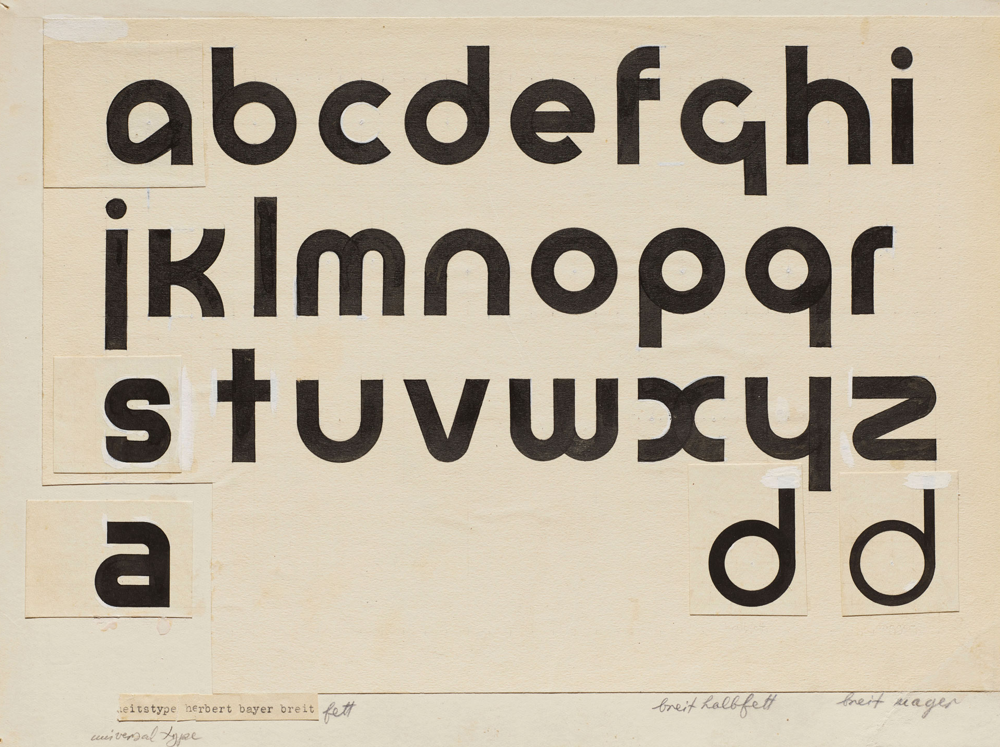
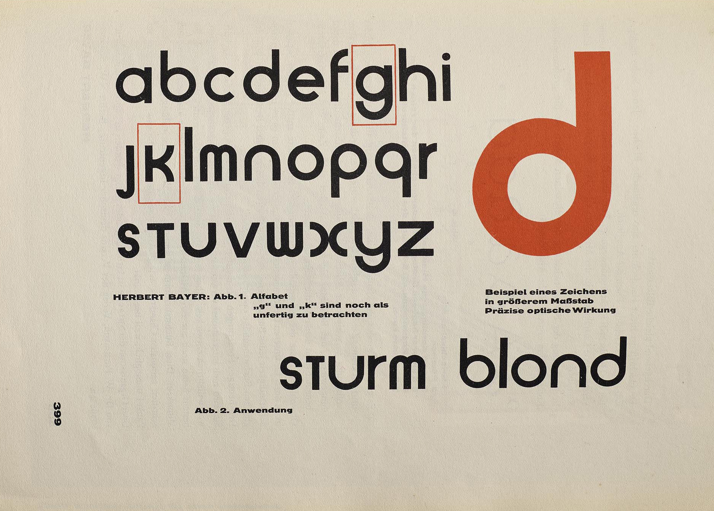
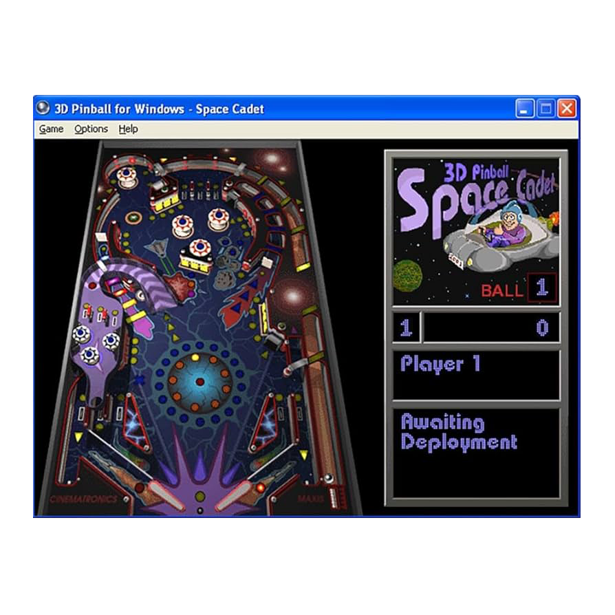

De geschiedenis van het lettertype vanbauhaus
In 1925 kreeg Herbert Bayer eerst student en later directeur van de afdeling drukkerij en reclame binnen Bauhaus, de opdracht om een lettertype te ontwerpen voor alle officiële Bauhaus communicatie. De gedachte achter dit lettertype was om een functioneel, modern en universeel lettertype te creëren dat in lijn lag met de minimalistische en functionalistische denkwijze van Bauhaus. Bayer ontwierp daarom een geometrisch sans-serif lettertype, waarbij hij hoofdletters geheel wegliet. Dit was in zijn ogen een onnodige complicatie en een erfenis uit het verleden die geen functie meer had in een moderne en functionele maatschappij.
Het lettertype werd in 1925 voor het eerst getekend en uitgewerkt als Universal Font. De basisvormen van de letters waren opgebouwd uit cirkels en strakke lijnen, wat paste bij geometrische eenvoud en functioneel ontwerp. Bayer wilde een lettertype ontwerpen dat iedereen kon begrijpen en gebruiken. Dit sloot aan bij de Bauhaus-filosofie waarin kunst en design toegankelijk moesten zijn voor iedereen, ongeacht sociale klasse of opleiding.
Het Universal Type werd nooit officieel als volledig lettertype uitgebracht tijdens de Bauhaus periode, maar het idee ervan werd wel een invloedrijk model binnen de school. Andere Bauhaus studenten en ontwerpers namen het concept over. Het lettertype kreeg bekendheid na publicatie in Bauhaus tijdschriften zoals Offset No. 7, waardoor het ook buiten de school aandacht trok. Bayer bereikte zijn hoogtepunt in typografisch ontwerp in 1926 met een poster voor een Kandinsky-tentoonstelling, gevolgd door een poster in 1927 voor een tentoonstelling van toegepaste kunst in Europa die je hiernaast ziet.
Het ontwerp was een belangrijke stap weg van de traditionele, decoratieve typografie naar iets wat zowel visueel aantrekkelijk als praktisch was. Deze benadering van design blijft relevant in de moderne grafische ontwerp en de typografie industrie.
Na het uiteenvallen van Bauhaus in 1933, raakte Universal Type niet direct wijdverspreid. Pas in de jaren 60 en 70, werd de interesse in Bauhaus typografie zichtbaar vooral door de opkomst van de reclame-industrie. Ontwerpers zoals Marty Goldstein en David L. Burke hebben het Universal Type geïnterpreteerd en gebruikt voor het ontwikkelen van nieuwe, op Bauhaus geïnspireerde lettertypen zoals Burko. In 1969 werd een vettere versie ontworpen door Joe Taylor, genaamd Blippo. Bauhaus invloed op typografie is ook terug te zien in hedendaagse lettertypes. Een bekend voorbeeld is Bauhaus 93 een variant van het URW Blippo Black, dat in 1993 werd uitgegeven en sindsdien voor diverse toepassingen is gebruikt, van het Playmobil logo tot het Microsoft-spel 3D Pinball.
